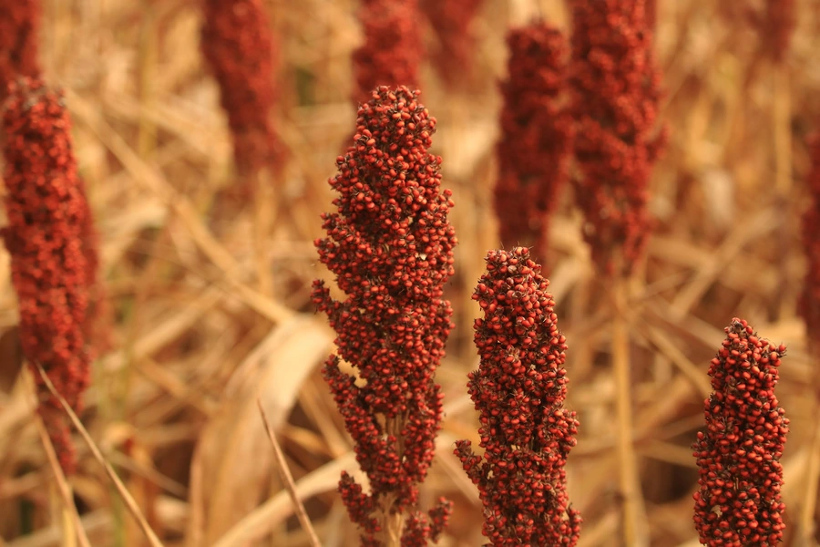

农作物与经济植物 · 植物界
高粱 Sorghum bicolor

高粱耐旱耐涝、适应性强，籽粒可食用或酿酒，茎秆可作燃料与饲料，是中国北方重要的旱地粮食作物。
- 分类
- 门被子植物门纲单子叶植物纲目禾本目科禾本科属高粱属
- 栖息环境
- 温带与热带的旱地、盐碱地，耐旱耐涝、适应性极强
- 地理分布
- 原产非洲，现主产于中国、印度、尼日利亚、美国等地
- 保护级别
- 暂无评估（栽培作物）
物种志
高粱是一年生高大草本，株高 1–3 m，茎秆粗壮、实心，叶片宽大。圆锥花序顶生，穗形因品种而异，有紧穗、散穗之分，籽粒球形，颜色有红、白、黄、褐等，常外露或包于颖壳中。高粱的根系发达，茎秆表面有蜡粉，能减少水分蒸发。
高粱原产非洲，约 4000 年前被驯化，后经印度传入中国，是中国北方重要的旱地粮食作物。它耐旱、耐涝、耐盐碱，适应性极强，在干旱半干旱地区也能获得较好收成。高粱籽粒可煮食、磨粉，也是酿造白酒、食醋的重要原料，中国许多名酒都以高粱为主要原料；茎秆可作燃料、编织材料和饲料，穗可制扫帚。近年来，高粱还因耐旱节水被用于干旱地区的生态种植。
形态与习性
- 株高1–3 m，茎秆粗壮实心
- 花序圆锥花序，有紧穗与散穗
- 籽粒球形，红、白、黄、褐等色
- 用途食用、酿酒、酿醋
- 茎秆可作燃料、编织与饲料
- 耐性耐旱、耐涝、耐盐碱
趣味知识
- 高粱原产非洲，四千多年前被驯化后传入中国。
- 中国许多名酒都以高粱为主要酿造原料。
- 高粱耐旱耐涝、耐盐碱，是北方旱地的重要作物。